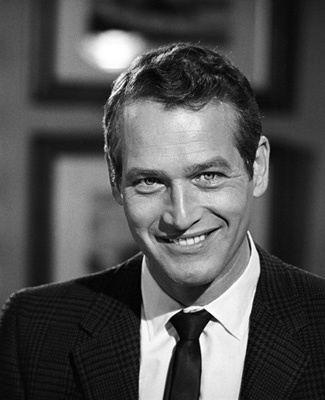
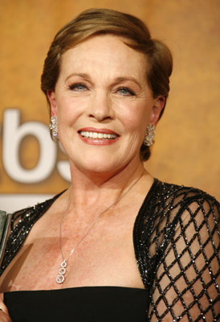
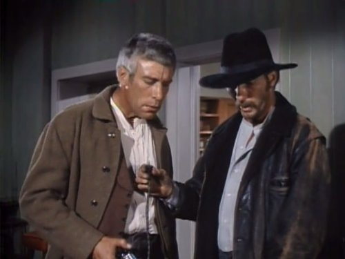
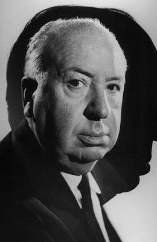
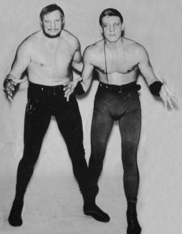

#2638 Der Hitchcock - Zerrissene Vorhang
Alternativ: Torn Curtain

 IMDB-Wertung: 6.7 / 10
IMDB-Wertung: 6.7 / 10  Metascore: 55
Metascore: 55 
Nichts erscheint dem amerikanischen Physiker Armstrong zu gefährlich, um an eine Formel zu gelangen. Er setzt sich mit seiner Begleiterin in Ost- Berlin ab, wo man ihn für einen willkommenen Überläufer hält. Schon bald macht er den Professor mit der begehrten Formel ausfindig und schreckt vor keinen Mittel zurück, ihrer habhaft zu werden. Der Staatssicherheitsdienst kommt nur allzu schnell hinter Amstrongs wahre Absichten und setzt alles daran, ihn und seine Begleitung aus dem Weg zu räumen.
Jahr: 1966
Dauer: 126 Minuten
FSK: 12
Land: USA Studio: Universal PicturesTonspuren:
Untertitel: Deutsch,
Auflösung: 1080p (1920x1040) Größe: 10076 MB
Genre: Thriller
Regisseur:  Alfred Hitchcock
Alfred Hitchcock
Drehbuch: Brian Moore, Willis Hall, Keith Waterhouse
Soundtrack: John Addison
Darsteller:
-  Paul Newman als Professor Michael Armstrong
-  Julie Andrews als Sarah Sherman
- Lila Kedrova als Countess Kuchinska
- Hansjörg Felmy als Heinrich Gerhard
- Tamara Toumanova als Ballerina
-  Mort Mills als Farmer
-  Alfred Hitchcock als Man in Hotel Lobby with Baby , uncredited
- Gerd Rein als East German Arresting Officer in Bus Sequence , uncredited
-  Wilhelm von Homburg als Blonde Twin in Bus , uncredited
- Wolfgang Kieling als Hermann Gromek
- Ludwig Donath als Professor Gustav Lindt
- Günter Strack als Professor Karl Manfred
- David Opatoshu als Mr. Jacobi
- Gisela Fischer als Dr. Koska
- Carolyn Conwell als Farmer's Wife
- Arthur Gould-Porter als Freddy - the Bookseller
- Gloria Gorvin als Fräulein Mann
- Elisabeth Alexander als Bus Passenger , uncredited
- Chris Anders als Blond Aide to Mr. Gerhard , uncredited
- Ilonka Bargel als East Berlin Housewife , uncredited
- Charles Bastin als University Judge , uncredited
- John Bleifer als Danish Waiter at Hotel D'Angleterre , uncredited
- Robert Boon als Professor Winkelmann , uncredited
- Peter Bourne als Professor Olaf Hengström , uncredited
- Burt Brandon als Norwegian Steward with Cablegramm , uncredited
- Heinz Brinkmann als Man in Qeue at Post Office , uncredited
- Gudi Burwell als Bus Passenger , uncredited
- Barry Cahill als American Correspondent , uncredited
- Linda Carol als Dancer , uncredited
- Rico Cattani als Heinrich - Escape Bus Driver , uncredited
- Robert Champion als Regular Bus Driver , uncredited
- Andrea Darvi als Gretl Koska , uncredited
- Hans Difflipp als Vice Minister Strauss , uncredited
- Maurice Doner als Hugo - Baggage Manager , uncredited
- Harold Dyrenforth als Otto Haupt , uncredited
- Horst Ebersberg als East German Interpreter , uncredited
- Lester Fletcher als East Berlin Travel Agent , uncredited
- Walter Friedel als Stasi Plainclothesman , uncredited
- Ben Frommer als Sceptical-Looking Airline Passenger , uncredited
- Lili Garner als Romanian Airline Stuartist , uncredited
- Larry Gelbman als Swedish Crane Operator , uncredited
- William Glover als British Correspondent , uncredited
- Gino Gottarelli als Second Russian Army Deserter , uncredited
- Horst Graf als University Judge , uncredited
- Winfried H. Grupe als Blond Twin Brother on Bus , uncredited
- Laurence Haddon als American Correspondent , uncredited
- Sasha Harden als Border Guard , uncredited
- Joe Harris als Ballet Member , uncredited
- Mischa Hausserman als Idealistic Young Man , uncredited
- Peter Hellman als East German Ship's Officer , uncredited
Datei: X:\Person\Hitchcock\Hitchcock - Zerrissene Vorhang, Der (1966, FSK12, 1920x1040).mkv seit 27.11.2015
Festplatte: HD Collection-7+mehr(A-Z)+Person
 Es gibt insgesamt 25 Filme in der Gruppe 'Person\Hitchcock'
Es gibt insgesamt 25 Filme in der Gruppe 'Person\Hitchcock'